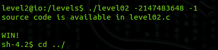

Com o level01 concluido, obtemos acesso ao shell que nos provê permissões para visualizar a senha do level02.
Conectando ao servidor ssh do level2, observamos 4 arquivos associados a esse level: dois binários SUID de 32-bits, level02 e level02_alt, e seus códigos C correspondentes, level02.c e level02_alt.c. Nesse post estarei focando no level02.c e seu binário level02, que é uma das duas formas de concluir esse nível.
Para começar, vamos analisar o código level02.c:
//a little fun brought to you by bla
#include <stdio.h>
#include <stdlib.h>
#include <signal.h>
#include <setjmp.h>
void catcher(int a)
{
setresuid(geteuid(),geteuid(),geteuid());
printf("WIN!\n");
system("/bin/sh");
exit(0);
}
int main(int argc, char **argv)
{
puts("source code is available in level02.c\n");
if (argc != 3 || !atoi(argv[2]))
return 1;
signal(SIGFPE, catcher);
return abs(atoi(argv[1])) / atoi(argv[2]);
}
Uma simples análise do código acima nos mostra que o objetivo desse nível é fazer com que de alguma forma a função “catcher” seja chamada. Como se trata de um binário SUID que possui permissões de level03 (visualize isso com ls -la) a linha:
setresuid(geteuid(),geteuid(),geteuid())
Faria com que o EUID fosse setado para o EUID do dono do binário, que possui permissões de level03. Vemos que na linha seguinte é feito a chamada de um shell (com permissões de level03) que nos daria acesso a senha do próximo nível. Mas como essa função pode ser chamada?
A única forma possível da função “catcher” ser chamada parece ser como handling na chamada da função signal() com o argumento SIGFPE. Um SIGFPE é um dos diversos Program Error Signals gerados pelo sistema operacional quando algum erro fatal é encontrado num programa, assim como o SIGILL, SIGSEGV, SIGABRT, SIGIOT, and so on. O SIGFPE, em específico, é um sinal gerado quando temos um fatal arithmetic error (como divisão por zero) ou também um overflow. Mais informações: Program Error Signals - The GNU C Library.
A função signal(), contida na biblioteca signal.h, nos permite “tratar” um determinado sinal ocorrido no programa, com uma função handling qualquer passada como argumento. Essa função será a resposta comportamental do programa à um determinado sinal gerado, que no caso do código do desafio, a função signal(SIGFPE, catcher) nos diz que assim que um SIGFPE for gerado, a função catcher será chamada. Ou seja… precisamos gerar um SIGFPE!
O código é pequeno, de forma que não é díficil observar que a única linha de código que poderia nos gerar um sinal desse tipo é
return abs(atoi(argv[1])) / atoi(argv[2]);
que simplesmente divide as conversões em inteiro, com atoi(), da string do primeiro argumento da linha de comando com a string do segundo argumento. É feito o retorno do módulo dessa divisão. Podemos imaginar de cara que uma entrada como “./level02 1 0” nos daria um SIGFPE por essa linha… de fato daria, exceto pela condição imposta no programa de que o inteiro associado ao segundo argumento por atoi() NÃO pode ser nulo:
if (argc != 3 || !atoi(argv[2]))
return 1;
Além da condição de exatamente três argumentos na linha de comando (contando com a execução do binário), é claro. Caso alguma dessas condições não seja satisfeita, o programa finalizará sem nenhuma chance de conseguirmos acesso a função catcher. Infelizmente, podemos descartar a divisão por zero.
A saída então seria gerarmos um overflow. Para isso, precisamos lembrar que no C-ANSI o tipo int é representado por 4 bytes, ou seja, 32-bits (isso pode ser visto com sizeof(int)). Portanto, temos 232 possíveis valores, que numa representação com sinal seriam:

Já que o bit mais significativo é reservado para representação do sinal do inteiro.
Isso nos dá um intervalo de -2147483648 a 2147483647, que são valores condizentes com as constantes INT_MIN e INT_MAX definidos pelo C e contidos na biblioteca limits.h. Obviamente, o limite mínimo é superior em módulo ao limite máximo por uma unidade, por conta da representação do zero.
Um exemplo de um overflow seria uma representação fora desse intervalo de valores possíveis, como por exemplo 2147483648. Esse valor não existe e extrapola o limite máximo de um inteiro no C-Ansi. De fato, esse valor pode ser obtido se entrarmos com “./level02 -2147483648 -1”, que diferente da divisão por zero, não invalida a condição de execução do programa. A divisão desses dois valores na penúltima linha faria um overflow do tipo inteiro e geraria um SIGFPE pelo sistema operacional que seria suficiente para acionar a função signal(), que tem como handling a nossa almejada “catcher”. Entrando com esses dois argumentos:
Um shell é aberto e agora temos permissão para visualizar a senha do level03!
comments powered by Disqus